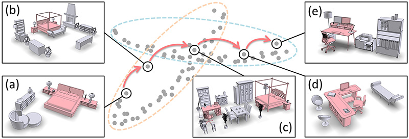
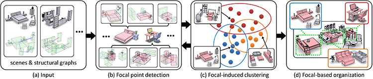
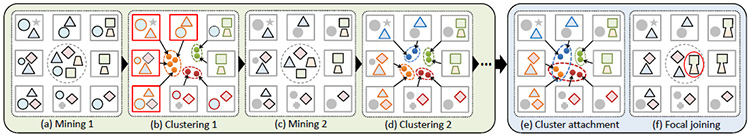
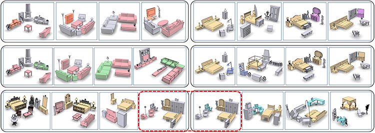
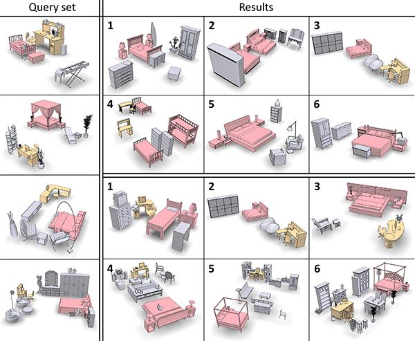

Organizing Heterogeneous Scene Collections through Contextual Focal Points
Kai Xu1,2,
Rui Ma3,
Hao Zhang3, Chenyang Zhu2, Ariel Shamir4, Daniel Cohen-Or5, Hui Huang1
1Shenzhen
VisuCA Key
Lab/SIAT, 2HPCL, Natl.
Univ. of
Def. Tech.,
3Simon
Fraser Univ., 4The Interdisciplinary Center, 5Tev Aviv Univ.
ACM Transactions
on Graphics (SIGGRAPH 2014), 33(4)

Figure 1: Focal-driven scene clustering results in overlapping clusters. An exploratory path, (a) to (e), through an overlap, which often contains hybrid scenes (c) possessing multiple focals, can smoothly transition between the scene clusters. These scene clusters often characterize meaningful scene categories. In this example, the transition is from bedrooms to offices.
|
Abstract
|
We introduce focal points for characterizing, comparing, and organizing collections of complex and heterogeneous data and apply the concepts and algorithms developed to collections of 3D indoor scenes. We represent each scene by a graph of its constituent objects and define focal points as representative substructures in a scene collection. To organize a heterogeneous scene collection, we cluster the scenes based on a set of extracted focal points: scenes in a cluster are closely connected when viewed from the perspective of the representative focal points of that cluster. The key concept of representativity requires that the focal points occur frequently in the cluster and that they result in a compact cluster. Hence, the problem of focal point extraction is intermixed with the problem of clustering groups of scenes based on their representative focal points. We present a co-analysis algorithm which interleaves frequent pattern mining and subspace clustering to extract a set of contextual focal points which guide the clustering of the scene collection. We demonstrate advantages of focal-centric scene comparison and organization over existing approaches, particularly in dealing with hybrid scenes, scenes consisting of elements which suggest membership in different semantic categories.
|
|
|
Paper |
|
|
|
Slides |
|
|
|
Video |
|
|
|
| Images |

Figure
2: An overview of our algorithm. The input is a heterogeneous collection of 3D indoor scenes. We represent each scene by a structural graph (a). The co-analysis algorithm is iterative, between (b) and (c). Each iteration involves an interleaving optimization consisting of focal point detection (b) and focal-induced scene clustering (c). After the set of contextual focals are obtained, the entire scene collection can be organized with the focals serving as the interlinks between scenes from various clusters (d).

Figure
3: Pipeline illustration. A scene is depicted with a grey box enclosing several substructures represented by circles, squares, diamonds, triangles, etc. To initialize the interleaving optimization, we first detect a set frequent substructure shown in the middle in (a). Based on that, subspace clustering leads to incorrect clusters (marked in red) due to the trivial substructure (circle) occurring in most scenes. Then we perform cluster-guided weighted mining which eliminates the trivial substructure. Following that, a more accurate clustering result is obtained based on the new set of discriminant substructures (middle in (d)). Finally, we perform cluster attachment to reveal overlapping clusters (the red and yellow clusters in (e)), as well as focal joining to discover non-local focal points (marked in red in (f)).

Figure
4: Several clusters and their representative focals (highlighted in colors) extracted from the Tsinghua scene collection. Top row shows an intermediate result for two clusters and the middle row shows the final result for the relevant clusters. Bottom rows show the final result for other clusters. Note multi-focal hybrid scenes, cluster overlap (marked with the red dashed box), and non-local focal points, such as the combos of fTV, TV-stand, table, sofag and fbed, nightstands, dresser, mirrorg in the last two rows.

Figure
5:
Multi-query retrieval takes a query set (left) and returns a ranked list of scenes (bottom-right) via focal-based scene comparison. Focal Centric Graph Kernal (FCGK) similarity is used and measured based on focals (colored red and yellow) that well-match frequent substructures in the query set. Returns based on global scene similarity computed by Graph Kernal (GK) are also shown (top-right). To not introduce a bias by coloring of the focals, in the GK returns, we also color any object whose tag matches that of an object in one of the focals.
|
|
|
| Thanks |
We would like to thank all the
reviewers for their valuable comments and feedback. We are grateful to the authors of [Fisher et al. 2011] and [Xu et al. 2013] for providing their datasets. This
work is supported in part by grants from NSFC China (61202333, 61025012 and 61232011), NSERC Canada (611370),
CPSF China (2012M520392), Guangdong Sci. and Tech. Program
(2011B050200007), Shenzhen Sci. and Inno. Program
(CXB201104220029A and KC2012JSJS0019A), and Israel Science Foundation.
|
|
|
| Code |
We provide the source code (in C++ and Matlab) of focal point detection via mining and clustering over a test dataset containing 100 scenes. The package includes a scene viewer program for viewing the results. For compiling and usage, please refer to the readme file included in the package. For the full datasets used in our paper, please contact the authors of these two works, [Fisher et al. 2011] and [Xu et al. 2013]. The source code for structural graph construction is available opon request.
Source code (ZIP, 105MB)
|
|
|
| Bibtex |
@article
{xu_sig14,
title = {Organizing Heterogeneous Scene Collection through Contextual Focal Points},
author
= {Kai
Xu and Rui Ma and Hao Zhang and Chenyang Zhu and Ariel Shamir
and Daniel Cohen-Or and Hui Huang}
journal
= {ACM Transactions on Graphics, (Proc. of SIGGRAPH 2014)},
volume
= {33},
number
= {4},
pages
= {35:1--35:12},
year
= {2014}
}
|
 
|